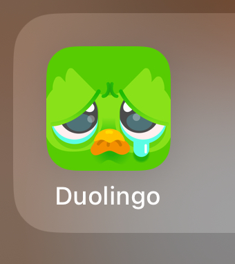
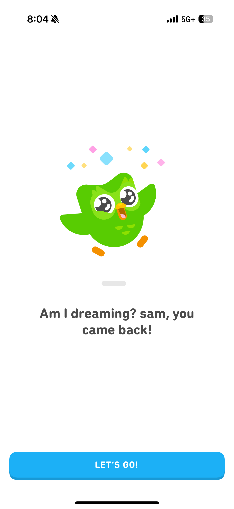
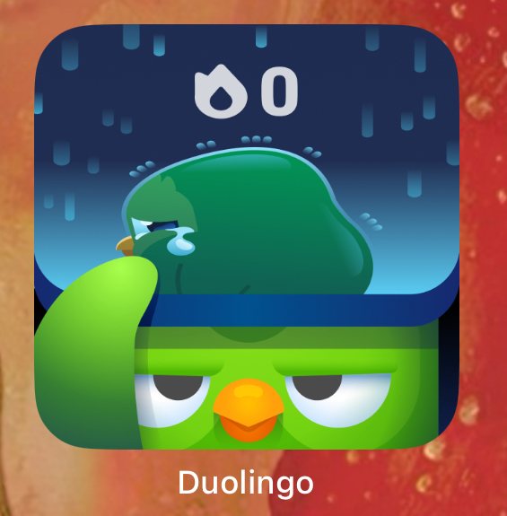
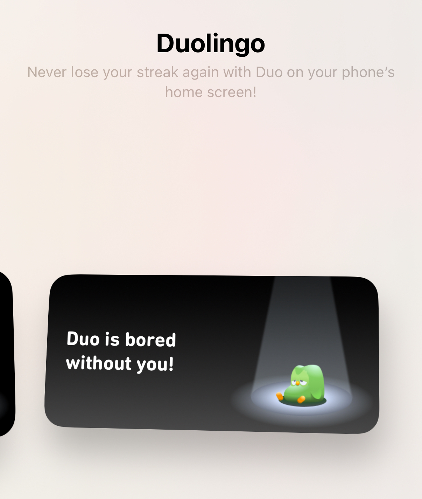

Example 1: Duolingo and Confirmshaming
Type: Dark Pattern
Who benefits: The platform: higher user engagement and activity, more long-term users and chances of users joining Duolingo Plus which is a subscription.
Description: Guilt-tripping or embarrassing users into continuing their learning streaks/activity on the app. For example, using images of Duo looking really sad because my streak is at 0 or being really excited that I opened the app after months of not using it. I think they use this type of guilt tripping to tug at my heart so that I can restart my streak.
Here are some examples from my own Duolingo app:
   Example 2: Equinox is a Roach Motel!!!
Type: Dark Pattern
Who benefits: The company: it becomes a hassle to cancel the membership
Description: ("Roaches check in but they don't check out") Traps users by making the sign-up process super easy but cancellation policies super strict.
My roommate had an Equinox membership for under a year and the only way for her to cancel her membership was to Photoshop her visa document... Other methods of cancellation include:
- In-Person meetings with a club manager
- Emailing a specific address and including detailed information.
- Cancellations are often only allowed if moving a significant distance away or due to medical reasons.
Example 3: Misleading Headline
Type: Misinformation
Who benefits: The publisher (they get more clicks and ads)
Description: An article headline makes a big claim that isn’t true, but people click because it sounds exciting.